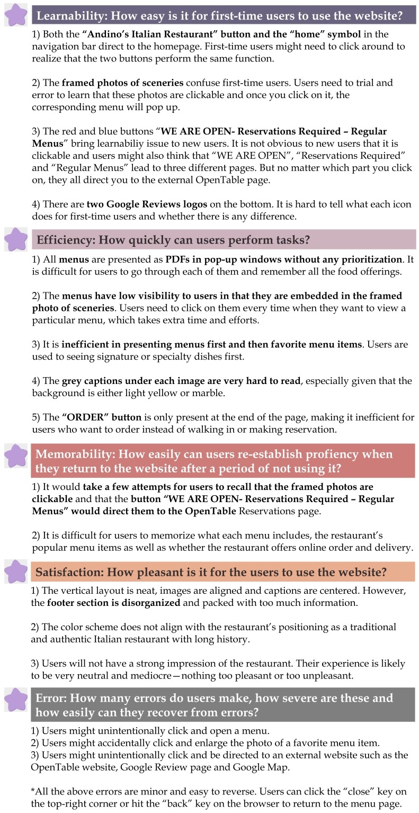

Reimaging Authentic Italian Food in Providence
Redesign of Andino's Menu Page
Andino's is one of my favorite Italian restaurants in Federal Hill, Providence. However, I have always found its menu page hard to navigate. To improve my own user experience and help the restaurant attract more traffic, I decide to redesign Andino's Menu page.
I. Original Website: Usability and Accessibility Problems
Usability Problems
Here is the original menu page of Andino's. For users, their goal of using this page is to see what menu items, foods and drinks are offered by Andino's and then to decide whether they want to go to the restaurant. Currently, the page allows users to view six different menus in PDF formats.
I then conducted usability analysis with respect to learnability, efficiency and memorability to identify problems.
In general, it is difficult for users to figure out and remember what is clickable on this page. Users need to intentionally look for information and the design of the website seems outdated.
Accessbility and Screen Reader Analysis
There is no significant accessbility concerns found, except for:
- The low contrast between text and background colors is the biggest accessibility issue, with 44 related errors identified.
- There are a few redundant links and text on the website which raise alerts.
- Some of the images are missing alternative text and language is not specified for the page.
I then use JAWS Screen Reading Software to further assess the menu page. The screen reader is able to recognize the text “Andino’s Menu”, the heading “Make a Reservation” and the “Find a Table” and “Order Online” buttons. Other than those, it repeats “unlabeled graphics” and “left parent placeholder, right parent graphic”. The design of the menu page is not very friendly to the screen reader due to the lack of alternative text for images and written information.
II. Low-Fidelity Wireframes: Responsiveness and Improvements
Using Balsamiq, I sketched three low-fidelity wireframes for Andino's Menu Page in Desktop, Tablet and Phone View. While the navigation bar, footer section and the favorite menu item section are laid out differently in smaller screen sizes, most of the design remains the same despite changes in font size, margins and paddings. Annotations are made next to different elements to explain where and how my design solve the aforementioned usability problems.
Desktop View

Tablet and Phone View
III. High-Fidelity Prototypes: One Step Further
Using Figma, I created three high-fidelity prototypes for Andino's Menu Page in Desktop, Tablet and Phone View. Annotations are made next to different elements to explain my design choices and responsiveness considerations.
Desktop (left), Tablet (middle) and Phone (right) View

Annotated Prototypes (click "next/prev" arrows or the slide bar to see all)


Elements that are Laid out Differently in Tablet/Phone View


IV. Redesigned Menu Page (HERE)
Click HERE to see the redesigned menu page for Andino's!
Obsevations and Accessibility Test Result
I have tested my redesigned website with Chrome Responsive Tool and confirmed that it works with any screen size on any device. My redesigned website also works any font size, including 150% font size on the tablet screen. All font and image sizes, paddings and margins adjust accordingly to fit different screen size, and the same level of eligiblity of information is preserved.
I tried WebAIM WAVE on different screen sizes and there are much fewer accessbility concerns compared to the original website.
The only error is due to the responsiveness design of the navigation bar where the Andino's logo is in the middle when the screen width is at least 992px and on the leftmost otherwise. Thus, there is a hidden logo in the top-left corner.
The only contrast error is due to the "LUNCH" menu button. After playing around with the transparency and contrast of the background color yet getting unsatisfactory outcomes, I decided to keep it as it is to match the color scheme.
The alerts are due to underlined text and skipped heading level.
V. Visual Design Style Guide
Here is the style guide for my design which provides guidance for the color scheme, buttons, typography, logos, icons and other interactive elements.

VI. Citations
- All menus, images and restaurant logos are from the original website: Andino's Menu Page.
- The original website is referenced and redesigned for nonprofit educational purpose and all work presented is not of commercial nature.
- Bootstrap v4.5.2, Font Awesome, script from JS Foundation and script from Federico Zivolo are used in redesigning the website.